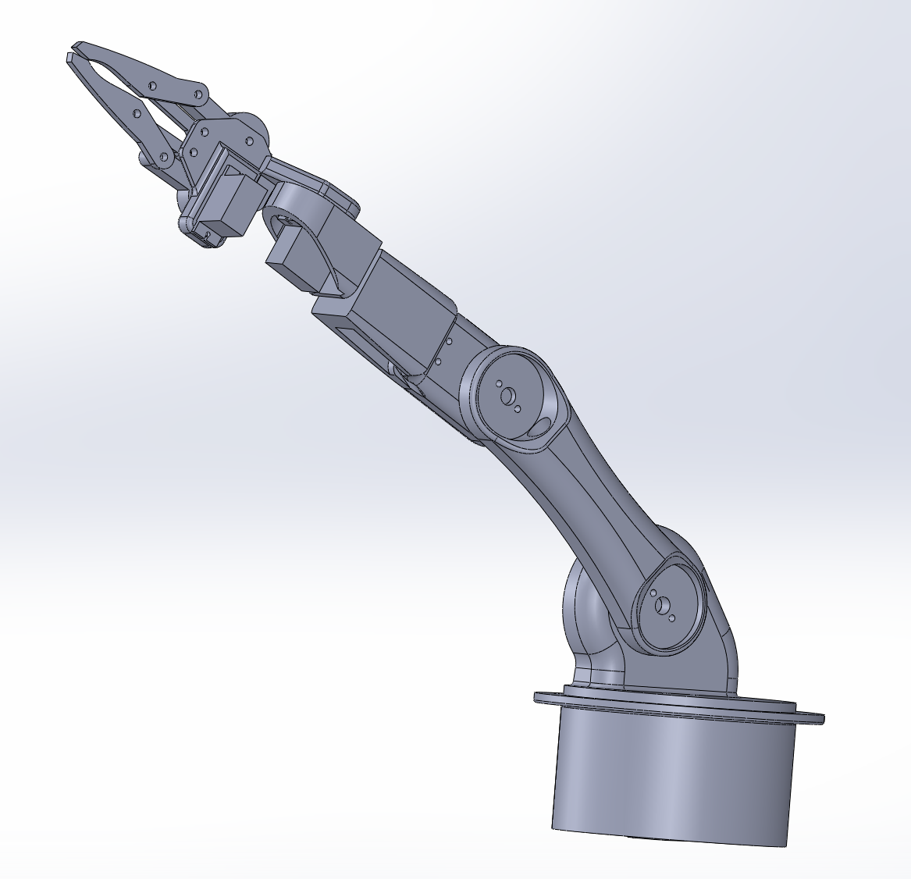
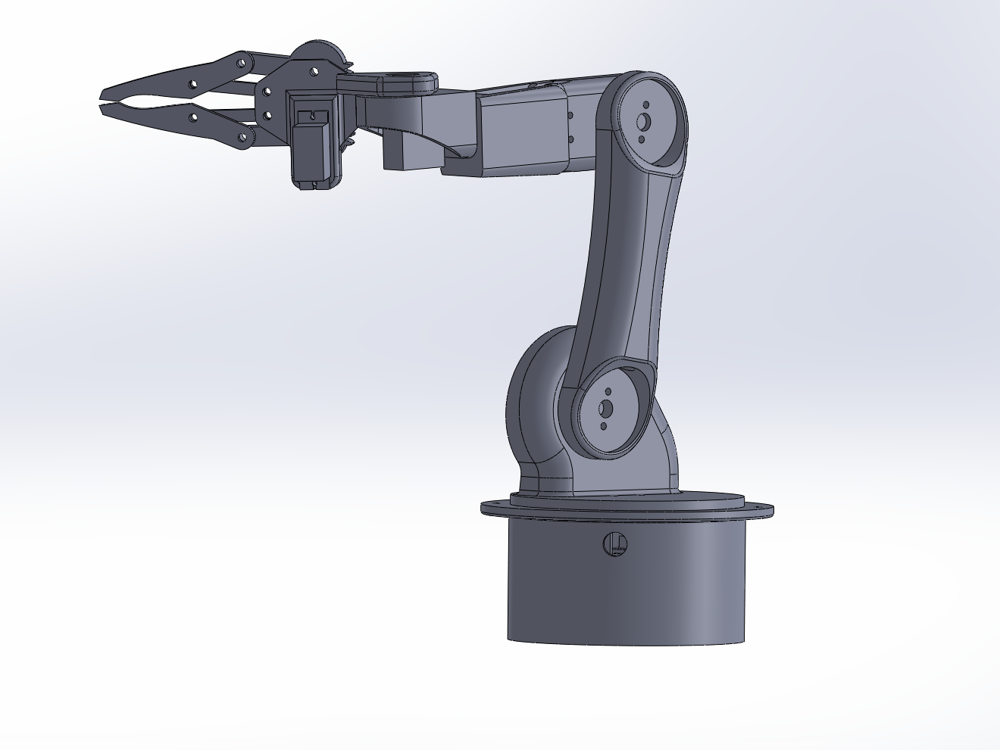

PROJECT 03
Robotic Arm & Gripper
SolidWorks assembly project exploring articulated joints, servo-driven mechanisms, mechanical linkages, geared motion and the assembly of a multi-component robotic arm.

Completed robotic arm assembly showing articulated joints, servo locations and geared gripper mechanism
Project Views

Alternative assembly view showing the arm structure and joint arrangement

Close-up view of the geared two-finger gripper and linkage mechanism
Overview
Assembled a multi-jointed robotic arm in SolidWorks, incorporating a rotating base, articulated arm links, servo motor assemblies and a geared two-finger gripper.
The project focused on developing experience with complex mechanical assemblies, component relationships and motion, while using a combination of standard and mechanical mates to reproduce the intended movement of the mechanism.
Modelling Process
Base & Arm Structure
Assembled the rotating base and primary arm links, positioning the main structural components to create the overall robotic arm geometry.
Servo Integration
Integrated servo motor models throughout the assembly, locating them within the shoulder, elbow and wrist regions of the arm.
Joint Assembly
Used concentric, coincident and parallel mates to locate the arm links and joint components while preserving the required rotational relationships.
Gripper Mechanism
Assembled the geared gripper mechanism using opposing gears, connecting links and two articulated jaws to create synchronised pincer movement.
Mechanical Mates
Applied gear and limit-angle mates alongside standard assembly mates to reproduce the mechanical behaviour of the gripper and selected arm joints.
Assembly Troubleshooting
Refined mate relationships and component alignment to resolve interference, gear phasing and constraint issues within the completed assembly.
Technical Work
- Multi-component SolidWorks assembly
- Articulated robotic arm mechanism
- Servo motor integration
- Concentric, coincident and parallel assembly mates
- Gear mate configuration
- Limit-angle mate application
- Geared two-finger gripper assembly
- Mechanical linkage assembly
- Gear alignment and motion troubleshooting
- Complex assembly constraint management